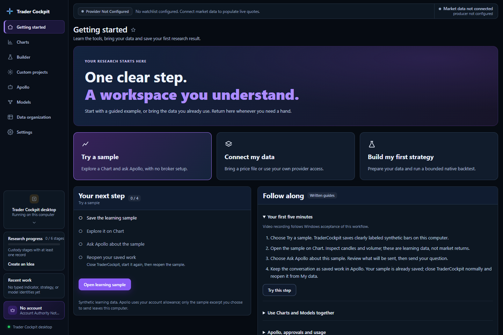

Monte Carlo block bootstrap.
See why one historical sequence is not the same thing as a distribution of plausible paths.
TraderCockpit tests, validates, and interprets quantitative strategies while keeping assumptions, evidence, and uncertainty attached to every result.
See the TraderCockpit desktop workflow across research, charts, Builder, Custom Projects, Apollo, data organization, settings, and learning.

The channel already contains current long-form lessons and playlists. Video remains optional: nothing from YouTube loads until you choose it.
See why one historical sequence is not the same thing as a distribution of plausible paths.
TraderCockpit Monthly is the current plan. Join the waitlist for access updates; checkout will appear here when subscriptions open.
Use exact product Docs for controls and states, How-Tos for tasks, Methods for assumptions, and Examples for complete research chains.